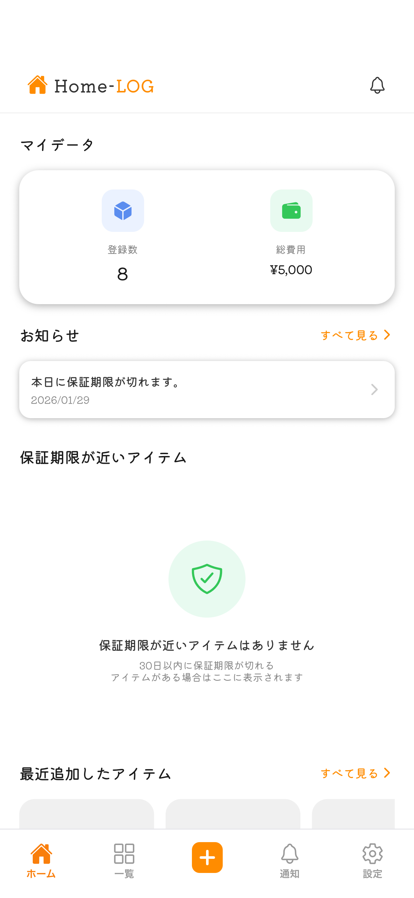
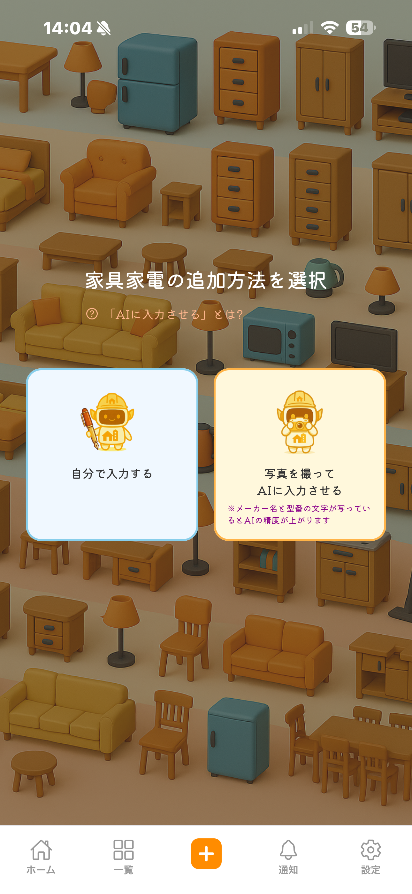
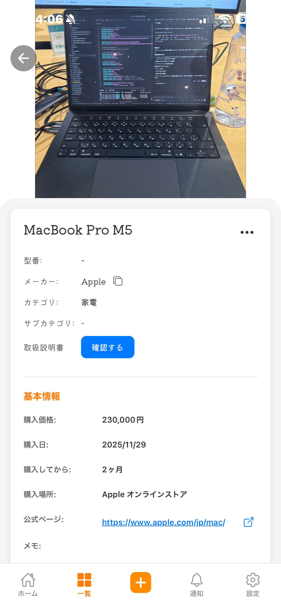

家電・家具管理アプリ Home-LOG
プロジェクト概要
自宅の家具・家電を登録し、購入日や保証期限を一覧で管理できるWebアプリです。家族で共有して「いつ買ったか」「保証はいつまでか」をすぐに確認できることを目的としています。
背景・課題
家電の保証書や領収書が散らばり、故障時に保証期間内かどうかすぐに分からないという声がありました。また、複数人で同じアカウントで管理できる必要があり、シンプルなUIで情報の追加・編集・削除がしやすいことが求められていました。
アプローチと思考プロセス
フレームワークを使わずVanilla JavaScriptで実装し、保守性を保つために「画面＝コンポーネント」という単位でJSを分割しました。一覧はカード形式のグリッドとし、保証期限が近いものは色で分かるようにCSS変数で状態ごとの色を定義しました。フォームは入力チェックとエラーメッセージを同一画面内で表示し、送信前の確認ステップを減らして離脱を防ぐ設計にしています。
実際の動作画面
アプリの操作画面スクリーンショットです。
- 
- 

- 
▼アプリダウンロードURL（無料）
- iOS：App Store でダウンロード
- Android：Google Play でダウンロード